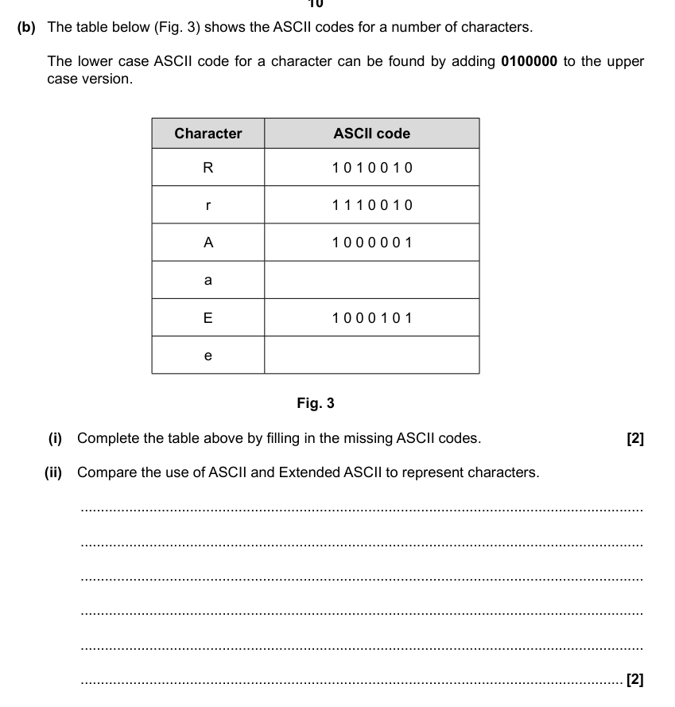
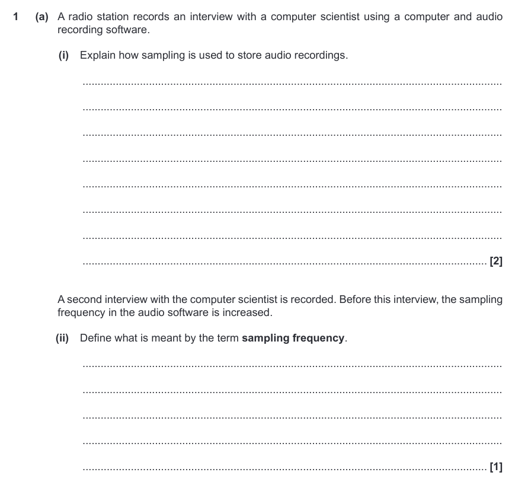
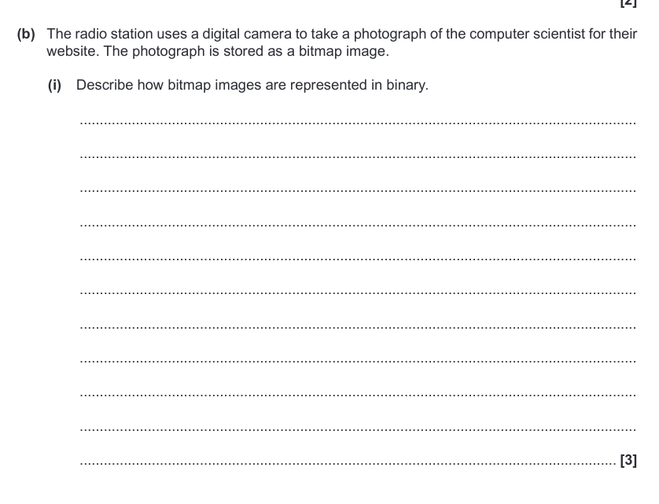

Data Representation
By Jeetaditya Chatterjee
how to store and represent different kinds of data
Press s for speaker notes
Data Storage and Representation
The Units
bit
nibble (4 bits)
byte (8 bits, 2 nibbles)
kilobyte (1000
bytes
)
megabyte (1000
kilobytes
)
gigabyte
terabyte
petabyte
Types of Data
Characters
Unicode
Images
Vector images
Colour Depth
Resolution
Metadata
Sound
Sampling rate
Bit rate
Calculating the size of a file
Questions
Question 1

Question 2

Question 3
